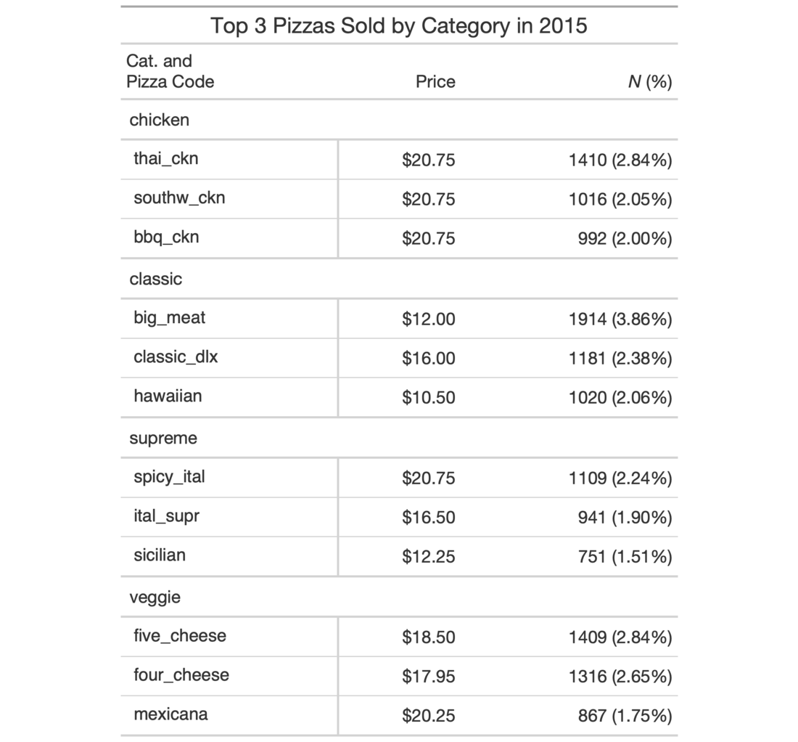

| cols_merge_n_pct {gt} | R Documentation |
The cols_merge_n_pct() function is a specialized variant of the
cols_merge() function. It operates by taking two columns that constitute
both a count (col_n) and a fraction of the total population (col_pct) and
merges them into a single column. What results is a column containing both
counts and their associated percentages (e.g., 12 (23.2%)). The column
specified in col_pct is dropped from the output table.
cols_merge_n_pct(data, col_n, col_pct, autohide = TRUE)
data |
A table object that is created using the |
col_n |
A column that contains values for the count component. |
col_pct |
A column that contains values for the percentage component.
This column should be formatted such that percentages are displayed (e.g.,
with |
autohide |
An option to automatically hide the column specified as
|
This function could be somewhat replicated using cols_merge(), however,
cols_merge_n_pct() employs the following specialized semantics for NA
and zero-value handling:
NAs in col_n result in missing values for the merged
column (e.g., NA + 10.2% = NA)
NAs in col_pct (but not col_n) result in
base values only for the merged column (e.g., 13 + NA = 13)
NAs both col_n and col_pct result in
missing values for the merged column (e.g., NA + NA = NA)
If a zero (0) value is in col_n then the formatted output will be
"0" (i.e., no percentage will be shown)
Any resulting NA values in the col_n column following the merge
operation can be easily formatted using the fmt_missing() function.
Separate calls of fmt_missing() can be used for the col_n and
col_pct columns for finer control of the replacement values. It is the
responsibility of the user to ensure that values are correct in both the
col_n and col_pct columns (this function neither generates nor
recalculates values in either). Formatting of each column can be done
independently in separate fmt_number() and fmt_percent() calls.
This function is part of a set of four column-merging functions. The other
two are the general cols_merge() function and the specialized
cols_merge_uncert() and cols_merge_range() functions. These functions
operate similarly, where the non-target columns can be optionally hidden from
the output table through the hide_columns or autohide options.
An object of class gt_tbl.

4-11
Other Modify Columns:
cols_align(),
cols_hide(),
cols_label(),
cols_merge_range(),
cols_merge_uncert(),
cols_merge(),
cols_move_to_end(),
cols_move_to_start(),
cols_move(),
cols_unhide(),
cols_width()
# Use `pizzaplace` to create a gt table
# that displays the counts and percentages
# of the top 3 pizzas sold by pizza
# category in 2015; the `cols_merge_n_pct()`
# function is used to merge the `n` and
# `frac` columns (and the `frac` column is
# formatted using `fmt_percent()`)
tab_1 <-
pizzaplace %>%
dplyr::group_by(name, type, price) %>%
dplyr::summarize(
n = dplyr::n(),
frac = n/nrow(.),
.groups = "drop"
) %>%
dplyr::arrange(type, dplyr::desc(n)) %>%
dplyr::group_by(type) %>%
dplyr::slice_head(n = 3) %>%
gt(
rowname_col = "name",
groupname_col = "type"
) %>%
fmt_currency(price) %>%
fmt_percent(frac) %>%
cols_merge_n_pct(
col_n = n,
col_pct = frac
) %>%
cols_label(
n = md("*N* (%)"),
price = "Price"
) %>%
tab_style(
style = cell_text(font = "monospace"),
locations = cells_stub()
) %>%
tab_stubhead(md("Cat. and \nPizza Code")) %>%
tab_header(title = "Top 3 Pizzas Sold by Category in 2015") %>%
tab_options(table.width = px(512))